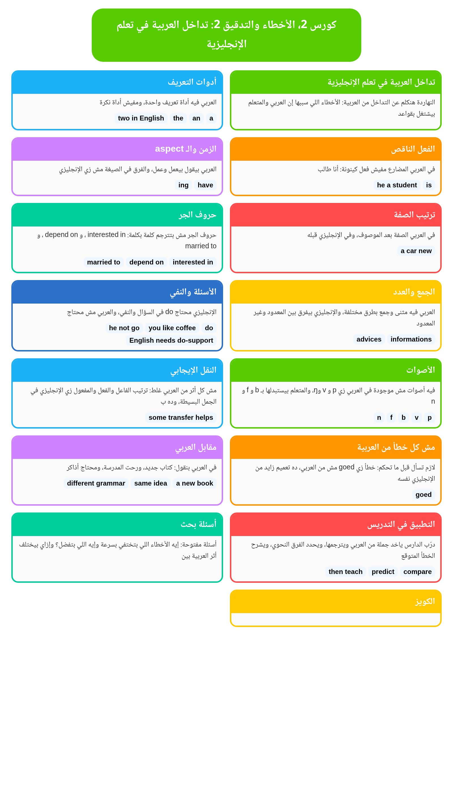

آداب الإنجليزية
: قواعد وجرامر وشعر وأساطير
⭐
0
🔥
استمر!
🔁
كورس 2، الأخطاء والتدقيق 2: تداخل العربية في تعلم الإنجليزية
📊
المستوى: من الصفر
كورس ٢ درس ٥٦
💬
القواعد الأكاديمية
📄 حمّل PDF الدرس
📝 ملخص الدرس (English + عربي) PDF
🧠 الخريطة الذهنية PDF
🧠 شوف الخريطة الذهنية للدرس

→
الدرس اللي قبله
كل دروس الكورس
الدرس اللي بعده
←